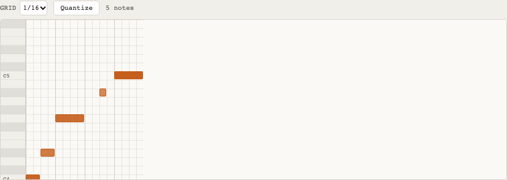

A web component on this slide. No server, no kernel: press play, tap a pad.
Data that changes every second, and people who need to see it and act on it, in rich, responsive apps
The same data and the same controls in each, ideally built once
Small parts composed into larger ones that behave alike, and themed all at once
In a notebook or a web app, with no loss of performance
If the stack can run a DAW, it can run your dashboard
A DAW in a notebook uses all five at once
No kernel on this page: the script answers the way the kernel would.
Drop an audio file on it, or play the pads. Zones, slices and microphone capture too.
A row per note or a step grid of chords; double-click a step to type its note.
Click the keyboard and hold a chord on Q W E R T: the arpeggiator plays it on a synth.
Still playing: the session lives on the page, not on the slide. Mute the drums.
Python in a Web Worker (Pyodide) serving the page: 1kbgz.github.io/nbplay/app
Every element reads --nbplay-* tokens, which fall back to Jupyter's --jp-* theme.

Click to add a note, drag to move or resize, the wheel for velocity, Quantize to snap.
Moving right changes the host and the wire, not the app
Keep the four apart, and the same app runs in a notebook, a server, or a static page
pip install nbplaypython -m nbplay.app